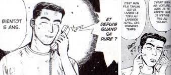
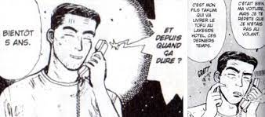

Qui est Bunta Fujiwara ?
Bunta est le père de Takumi dans le manga Initial D. Âgé de 43 ans, c’est un ancien pilote de rallye reconverti dans la fabrication et la vente de tofu. Il est le propriétaire d’une Toyota Sprinter Trueno GT-APEX (AE86) dont il se sert pour faire les livraisons. Cette petite sportive n’est plus tout à fait dans sa configuration d’origine : comme Bunta est un mécanicien aguerri, il a revu les réglages de la suspension pour augmenter son adhérence sur la route du col d’Akina. C’est avec cette voiture qu’il a acquis la réputation d’être imbattable sur ce col dans une descente de vitesse. C'est aussi un père qui a élever son fils seul, même si des fois, sa manière de faire reste discutable, comme le montre la planche juste dessous.
 

Bunta Fujiwara, père de Takumi, et une planche du manga.